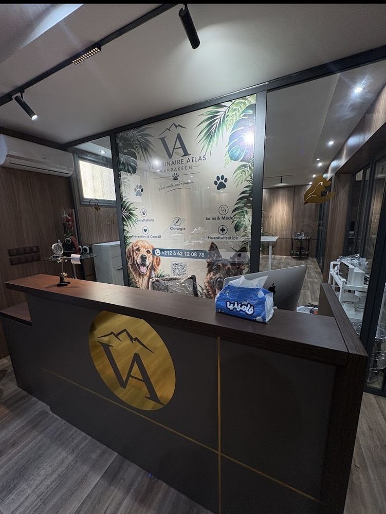
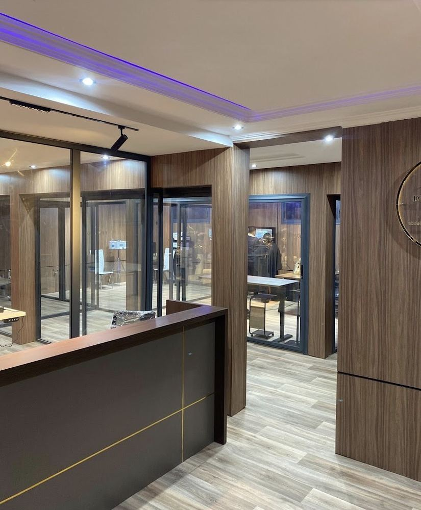
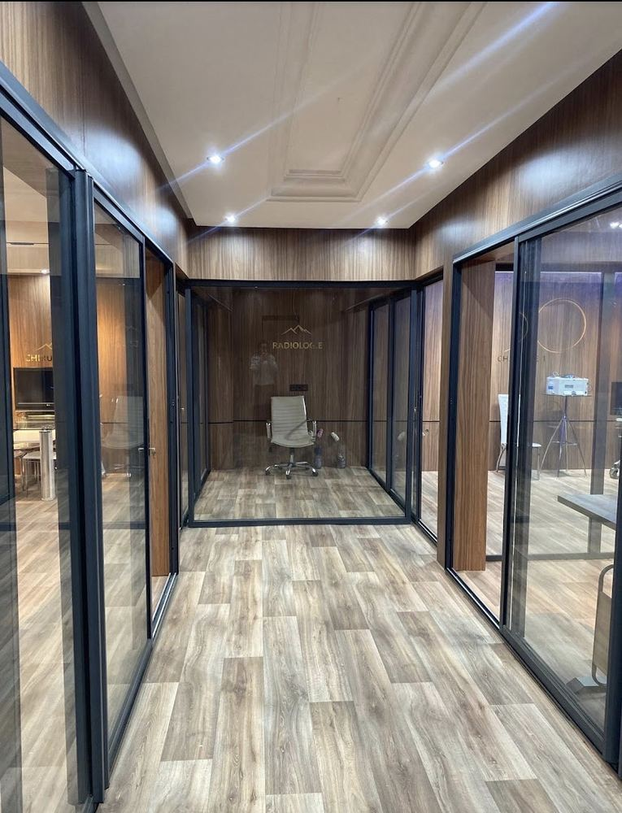
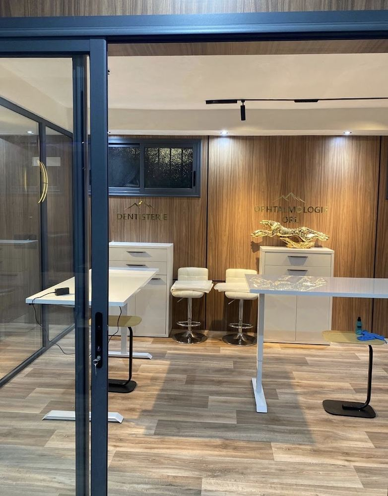
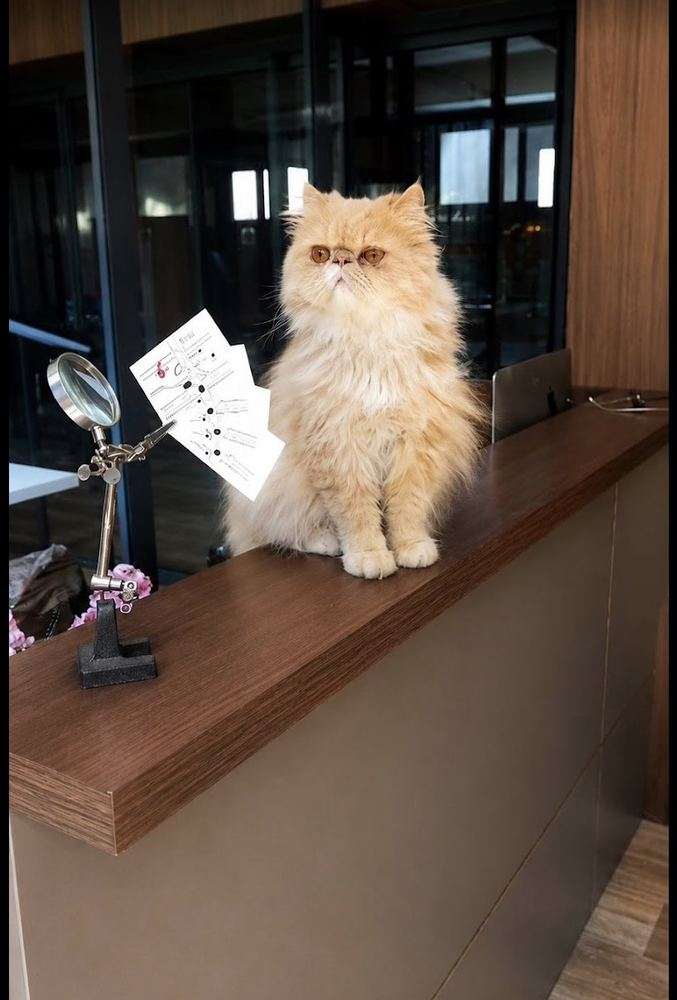
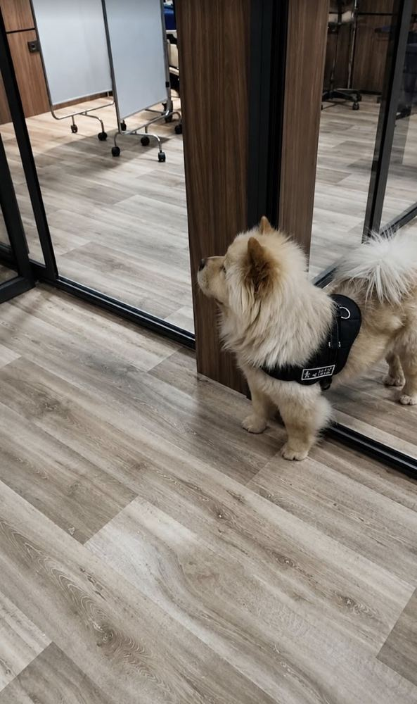

Consultations
Examen complet, bilan de santé et suivi adapté à l'âge de votre animal.
Le Dr Abdellah El Mansouri et son équipe vous accueillent dans un cabinet moderne à Marrakech : consultation, chirurgie, radiologie, hospitalisation. On prend le temps d'examiner calmement et de tout vous expliquer.
178 avis Google
Chiens, chats et petits animaux sont reçus sur rendez-vous. Pour une urgence pendant les horaires d'ouverture, appelez avant de venir pour que l'équipe se prépare.
Examen complet, bilan de santé et suivi adapté à l'âge de votre animal.
Diagnostic et traitement des maladies, pansements, soins courants.
Stérilisation et interventions sous anesthésie surveillée, dans un bloc dédié.
Votre animal reste sous surveillance pendant sa convalescence.
Radiographies réalisées sur place pour un diagnostic rapide.
Détartrage, extractions et soins de la bouche.
Yeux, oreilles et voies respiratoires : examens et traitements.
Vaccins, antiparasitaires, alimentation et conseils au quotidien.
Accueil, salles de soins vitrées, radiologie et dentisterie : un cabinet pensé pour le confort des animaux et de leurs maîtres.






Un repère pour préparer vos rendez-vous. Le vétérinaire ajuste le protocole selon l'animal, son environnement et ses voyages.
Apportez le carnet de santé à chaque visite, ainsi que les vaccins déjà faits si l'animal a été adopté.
Note moyenne de 4,9 sur 5, sur 178 avis publiés sur Google.
Clinique propre, équipe gentille et très professionnelle. Le vétérinaire prend le temps de tout expliquer simplement.
Merci Dr El Mansouri ! Cabinet très propre et chaleureux, et une équipe patiente avec mon chat pourtant très agressif.
Un très bon médecin et un bon environnement pour les animaux. Je reviendrai pour les vaccins de mon chat.
Très professionnel, avec beaucoup de respect pour les animaux et leurs propriétaires.
Super service, je recommande. J'y retournerai avec mon chat pour ses vaccins.
Le cabinet se trouve près de Sinko, à l'angle de l'avenue Mouzdalifa et de la rue Bir Ami.